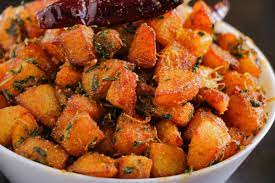

Potato Fry

Description
This simple and yummy potato fry recipe is undoubtedly a timeless classic. This recipe adds an Indian masala touch to a regular potato fry which will take you on a spice ride
Now without wasting any time, let's cook it
Ingredients
- Fresh potatoes- 4
- Musturad seeds
- Cumin seeds
- Chopped garlic
Steps
- Take a pan, add oil to the pan and add mustard seeds, cumin seeds and chopped garlic to the oil
- Remove the skin and chop the potatoes in to small cubes. Place the chopped cubes in salt water
- Add the chopped potatoes to the pan
- Stil really carefully after every 7 minutes and make sure to stir very gently
- Do not ut any lid on the pan so we get crispy fried potatoes
- Once potatoes are completely crisp fried, turn off the heat, add salt, chilli powder, corriender powder and chat masala.
- Mix well and enjoy the fry by itself or rice